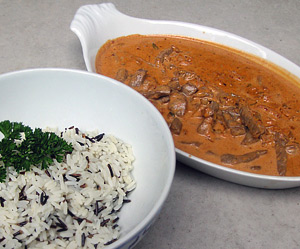

Rindsgeschnetzeltes an Rahmsauce
5 von 6Den Backofen auf 70 Grad vorwärmen. Pro Person 150 g Rindsgeschnetzeltes allseits scharf anbraten, mit Salz und Pfeffer würzen, herausnehmen und im vorgeheizten Backofen abgedeckt mit ALU-Folie warm stellen. Eine Tomate in kochendem Wasser kurz abbrühen und häuten. Danach das Fleisch der Tomate in Würfel schneiden. 2 Gewürzgurken und die Zwiebel In feine Würfel schneiden. Die Zwiebelwürfel im Bratfett glasig dünsten. Tomaten- und
Gurkenwürfel wie auch ein TL Tomantemark und den gepressten Knoblauch dazugeben und kurz mitbraten. 2 DL Crème fraîche und 1 DL Rahm in die Pfanne geben und
etwas einköcheln lassen. 1 TL Senf dazu geben und umrühren. Mit Salz und Pfeffer aus der Mühle abschmecken. Das Fleisch wieder in die Sauce geben und nochmals kurz
aufkochen lassen. Servieren.
